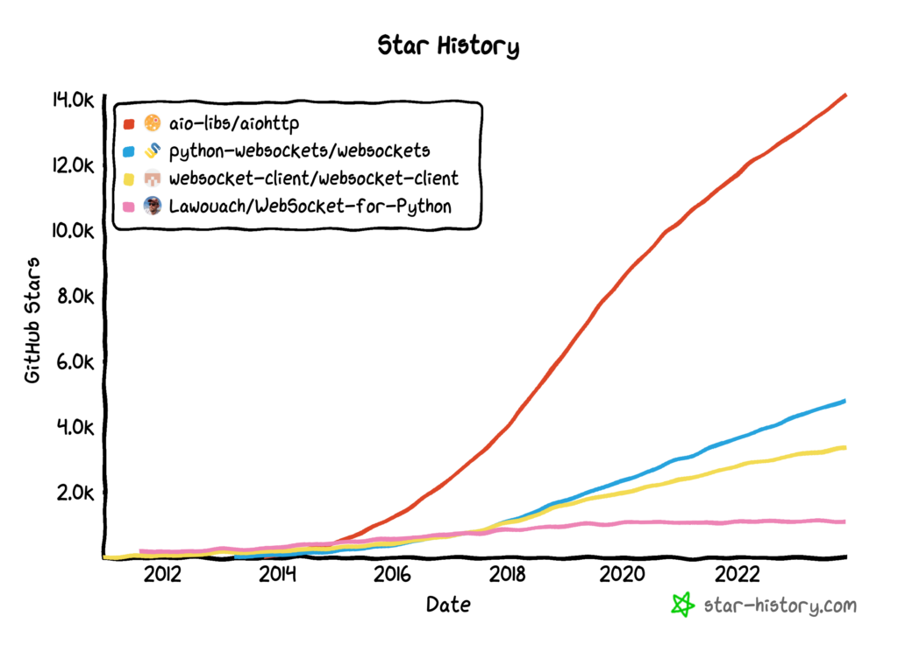

Asyncio WebSocket Clients
Websockets provide a full-duplex way for clients and servers to communicate on the web.
It is an efficient and widely used protocol for real-time applications like chat, games, and streaming of text, audio, and/or video.
The asyncio module in the Python standard library does not provide direct support for WebSockets, although we can develop WebSocket programs in asyncio using third-party libraries like aiohttp and websockets.
In this tutorial, you will discover asyncio Websocket libraries in Python.
After completing this tutorial, you will know:
- What are WebSockets and what are the main libraries used for developing asyncio Websocket programs in Python.
- How to develop a WebSocket echo client and server using the aiohttp library.
- How to develop a WebSocket echo client and server using the websockets library.
Let's get started.
What Are WebSockets
WebSockets are a communication protocol that provides full-duplex communication channels over a single, long-lived connection between a client and a server.
WebSocket is a computer communications protocol, providing simultaneous two-way communication channels over a single Transmission Control Protocol (TCP) connection.
-- WebSocket, Wikipedia.
Unlike traditional HTTP, which follows a request-response model, WebSockets enable real-time, bidirectional communication, allowing both the client and server to send messages to each other asynchronously without the overhead of repeated connections.
Key points about WebSockets:
- Full-Duplex Communication: WebSockets allow data to be sent and received simultaneously, enabling real-time interaction between clients and servers.
- Low Latency and Overhead: By maintaining a persistent connection, WebSockets eliminate the need for repeated handshakes, reducing latency and overhead compared to traditional HTTP.
- Support for Real-Time Applications: They are well-suited for applications requiring instant updates or notifications, such as chat applications, live feeds, multiplayer gaming, financial updates, etc.
- Standardization: WebSockets have standardized APIs across different programming languages and platforms, making them widely supported and interoperable.
- Compatibility: While WebSockets offer advantages, their use might be limited in certain environments due to proxy or firewall restrictions. However, they are widely supported in modern browsers and web servers.
WebSockets are popular in the development of modern web-based services and applications.
WebSockets and Asyncio
WebSockets and asynchronous programming, particularly in Python with asyncio, are closely related due to their shared focus on handling I/O operations efficiently.
WebSockets enable asynchronous, event-driven communication, making them ideal for applications requiring instant updates or real-time interactions.
The focus of asyncio is on non-blocking I/O operations, specifically socket I/O. It allows tasks to run concurrently without waiting for one another, enhancing efficiency by avoiding idle time spent waiting for I/O operations to complete.
WebSockets often leverage asynchronous programming paradigms like asyncio to handle multiple WebSocket connections concurrently within a single event loop.
This enables servers to efficiently manage numerous client connections without dedicating a thread or process to each, optimizing resources and facilitating real-time, bidirectional communication.
This means that we don't need asyncio to use WebSockets, but using WebSockets within asyncio is a well-suited application.
Asyncio WebSocket Client Libraries
There are a number of asyncio-compatible Websocket client libraries in Python.
They are:
- aiohttp: Asynchronous HTTP client/server framework for asyncio and Python
- websockets: Library for building WebSocket servers and clients in Python
Two other libraries that are not async-first but do support WebSockets in Python include:
- websocket-client: WebSocket client for Python
- ws4py: WebSocket client and server library for Python 2 and 3 as well as PyPy
Below is a plot of GitHub star histories to give some idea of the relative popularity of each project.

Let's take a closer look at each major client library in turn.
aiohttp For WebSockets
The aiohttp library is a general asyncio HTTP client and server framework.
Asynchronous HTTP client/server framework for asyncio and Python
-- aiohttp GitHub Project.
It can be used to make async HTTP requests in asyncio programs and can be used as a lightweight async-first web server.
As such, it is the most popular HTTP client library for asyncio, a modern async replacement for Requests.
It also supports WebSockets.
Specifically, it supports both client and server WebSockets.
Let's explore a simple hello world WebSocket server and client using aiohttp.
Firstly, we need to install the aiohttp library using our preferred Python package manager, such as pip.
For example:
pip install aiohttpNext, let's develop a WebSocket client and server.
aiohttp WebSocket Echo Server
We can then define a simple WebSocket server that echoes back any message it receives.
Firstly, we can define the handler for client connections.
The handler is a coroutine that takes a aiohttp.web.Request object as an argument.
We can then create a aiohttp.web.WebSocketResponse object and prepare it using the request, which starts the WebSocket.
Next, we can send and receive strings via send_str() and receive() methods. Helpfully, the class implements the asynchronous iterator interface to read messages from the client that we can traverse using the "async for" expression.
The server will expect to receive one message, report the message locally, and then send the same message back.
Implementing this, The client handler coroutine is defined below.
# client connection handler
async def client_handler(request):
# create the websocket response
ws = aiohttp.web.WebSocketResponse()
# prepare the response
await ws.prepare(request)
# report client connected
print(f'Client connected')
# read messages from the server and send them back
async for message in ws:
# report message
print(f'> {message.data}')
# send message back to client
await ws.send_str(message.data)
# report client disconnected
print(f'Client disconnected')
return ws
We can then start the server.
This involves first creating an aiohttp.web.Application instance and adding a route that is connected to our handler.
Finally, we can start the asyncio event loop that will accept client connections. We can specify the host and port details, which in this case are the IP address for the local host and port 8080.
...
# create the server
app = aiohttp.web.Application()
# register the handler
app.add_routes([aiohttp.web.get('/ws', client_handler)])
# accept client connection
aiohttp.web.run_app(app, host='127.0.0.1', port=8080)Tying this together, the complete WebSocket server developed using aiohttp is listed below.
# SuperFastPython.com
# example of an asyncio websocket server with aiohttp
import aiohttp
import aiohttp.web
# client connection handler
async def client_handler(request):
# create the websocket response
ws = aiohttp.web.WebSocketResponse()
# prepare the response
await ws.prepare(request)
# report client connected
print(f'Client connected')
# read messages from the server and send them back
async for message in ws:
# report message
print(f'> {message.data}')
# send message back to client
await ws.send_str(message.data)
# report client disconnected
print(f'Client disconnected')
return ws
# create the server
app = aiohttp.web.Application()
# register the handler
app.add_routes([aiohttp.web.get('/ws', client_handler)])
# accept client connection
aiohttp.web.run_app(app, host='127.0.0.1', port=8080)
Save the program to file, e.g. server.py and run from the command line.
For example:
python server.pyNext, we can develop a simple WebSocket client to connect to this server.
aiohttp WebSocket Echo Client
This involves first opening a aiohttp.ClientSession and then connecting to the server on port 8080.
Connecting to the server creates an aiohttp.ClientWebSocketResponse object that we can use to interact with the server.
We can use the asynchronous context manager for both the session and the connection.
Once we have a connection object, we can send and receive strings via send_str() and receive() methods, like we did on the server.
The client sends a "hello world" message, receives a response, and then closes the connection and session.
Tying this together, the complete example is listed below.
# SuperFastPython.com
# example of an asyncio websocket client with aiohttp
import asyncio
import aiohttp
# run the client
async def main():
# start a session
async with aiohttp.ClientSession() as session:
# connect to the server
async with session.ws_connect('http://127.0.0.1:8080/ws') as ws:
# report progress
print('Connected to server')
# send the message to the server
await ws.send_str('Hello World!')
# receive response
result = await ws.receive()
# report response
print(f'Received: {result.data}')
# report progress
print('Disconnected')
# start the event loop
asyncio.run(main())
We can save this program to a file, e.g. client.py, and run it from the command line.
For example:
python client.pyaiohttp Echo Client and Server Session
The WebSocket client connects to the WebSocket server.
It sends the "Hello World!" message.
This message is received by the server that reports it locally and then sends it back.
The client receives and reports the message, then closes the connection and the session automatically by exiting the asynchronous context manager blocks.
The server remains receptive to further client connections. We can terminate the server with a signal interrupt (SIGINT) via the Control-C key combination.
The output from the server looks as follows:
======== Running on http://127.0.0.1:8080 ========
(Press CTRL+C to quit)
Client connected: <WebSocketResponse Switching Protocols GET /ws >
> Hello World!
Client disconnected: <WebSocketResponse Switching Protocols GET /ws >
The output from the client looks as follows:
Connected to server
Received: Hello World!/answer
DisconnectedThis highlights how we can develop a simple WebSocket echo server and client in asyncio using aiohttp.
Next, let's look at how we can do something similar using the websockets library.
websockets Client Library
The websockets library provides an async toolkit for developing WebSocket applications.
Like aiohttp, it also has support for a websocket server that can be used for testing or hosting small to modestly sized APIs.
websockets is a library for building WebSocket servers and clients in Python with a focus on correctness, simplicity, robustness, and performance. Built on top of asyncio, Python's standard asynchronous I/O framework, the default implementation provides an elegant coroutine-based API.
-- websockets GitHub Project.
The library also supports a threading and Sans-I/O interface, meaning it is not limited to use in asyncio applications.
Let's explore a simple hello world WebSocket server and client using websockets.
The documentation provides a simple echo client and server already, and we will use this as a base and update it to match the design above used for aiohttp.
Firstly, we need to install the websockets library using our preferred Python package manager, such as pip.
For example:
pip install websocketsNext, let's develop a WebSocket client and server.
websockets Echo Server
We can then define a simple websockets server that echoes any message it receives.
This involves defining a handler coroutine that takes a websockets.server.WebSocketServerProtocol object.
Messages can be read and written via recv() and send() methods, and like aiohttp, we can use read messages via the asynchronous iterator interface for the "async for" expression.
The coroutine below implements the client handler.
# client connection handler
async def client_handler(ws):
# report client connected
print(f'Client connected: {ws.remote_address}')
# read messages from the server and send them back
async for message in ws:
# report message
print(f'> {message}')
# send message back to client
await ws.send(message)
# report client disconnected
print(f'Client disconnected: {ws.remote_address}')
Next, we can define the main coroutine that runs the server.
This involves first calling the websockets.server.serve() method and specify the name of the handler coroutine, the local address, and the port.
We can then leave the server to accept client connections forever. This can be achieved by awaiting an empty asyncio.Future.
The main() coroutine below implements this.
# drive the server
async def main():
# start the server
async with serve(client_handler, '127.0.0.1', 8080):
# report progress
print('Server Started, Control-C to stop')
# accept connections forever
await asyncio.Future()
Finally, we can start the event loop and run the program.
...
# start the event loop
asyncio.run(main())Tying this together, the complete example is listed below.
# SuperFastPython.com
# example of an asyncio websocket server with websockets
import asyncio
from websockets.server import serve
# client connection handler
async def client_handler(ws):
# report client connected
print(f'Client connected: {ws.remote_address}')
# read messages from the server and send them back
async for message in ws:
# report message
print(f'> {message}')
# send message back to client
await ws.send(message)
# report client disconnected
print(f'Client disconnected: {ws.remote_address}')
# drive the server
async def main():
# start the server
async with serve(client_handler, '127.0.0.1', 8080):
# report progress
print('Server Started, Control-C to stop')
# accept connections forever
await asyncio.Future()
# start the event loop
asyncio.run(main())
Save the program to a file, e.g. server.py, and run from the command line.
For example:
python server.pyNext, we can develop a simple WebSocket client to connect to this server.
websockets Echo Client
Developing an echo client is straightforward.
Firstly, we can connect to the server using websockets.client.connect(), which can be simplified using the alias websockets.connect().
This creates a websockets.client.WebSocketClientProtocol object that can be used to read and write messages via the recv() and send() methods, and also implements the async iterator interface used via the "async for" expression.
In this case, after connecting, we will send a "Hello World" message, read the response and close the connection.
The API is simpler than aiohttp, combining the opening and closing of a session and connection into a single activity.
Tying this together, the complete example is listed below.
# SuperFastPython.com
# example of an asyncio websocket client with websockets
import asyncio
import websockets
# drive the client connection
async def main():
# open a connection to the server
async with websockets.connect("ws://127.0.0.1:8080") as websocket:
# report progress
print('Connected to server')
# send a message to server
await websocket.send("Hello world!")
# read message from server
message = await websocket.recv()
# report result
print(f"Received: {message}")
# report progress
print('Disconnected')
# start the event loop
asyncio.run(main())
We can save this program to a file, e.g. client.py, and run it from the command line.
For example:
python client.pywebsockets Echo Client and Server Session
The WebSocket client connects to our server.
It sends the "Hello World!" message.
This message is received by the server that reports it locally and then sends it back.
The client receives and reports the message, then closes the connection automatically via exiting the async context manager.
The server remains receptive to further client connections. We can then terminate the server with a signal interrupt (SIGINT) via the Control-C key combination.
The output from the server looks as follows:
Server Started, Control-C to stop
Client connected: ('127.0.0.1', 61394)
> Hello world!
Client disconnected: ('127.0.0.1', 61394)
The output from the client looks as follows:
Connected to server
Received: Hello world!
DisconnectedThis highlights how we can develop a simple WebSocket echo server and client in asyncio using the websockets library.
Takeaways
You now know about asyncio WebSocket libraries in Python and how to get started using them.